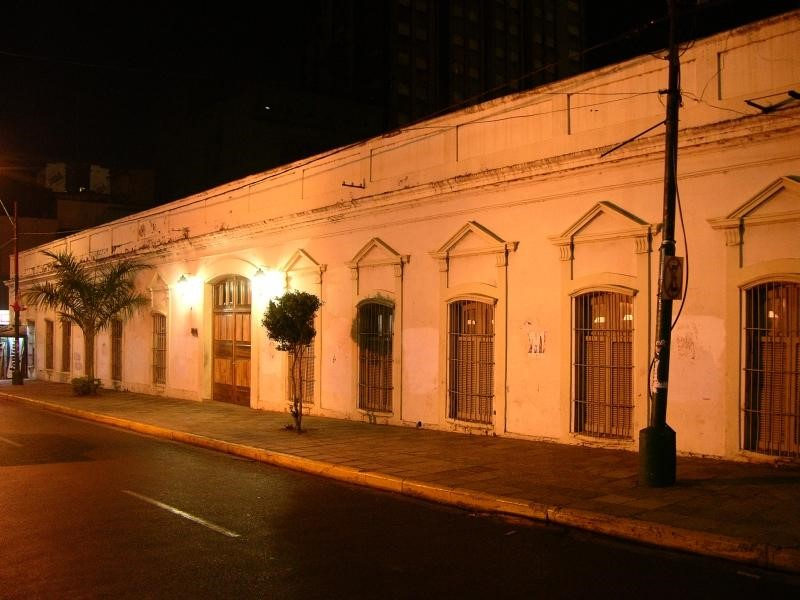

Edificio de la Facultad de Derecho y Ciencias Sociales
Denominación actual: Posgrado de carreras de Derecho y Ciencias Sociales (UNA)
Otras denominaciones: Ex Residencia de Madame Lynch
Aspectos Históricos
Los orígenes de este predio se remontan al año 1853, cuando la propiedad abarcaba toda la manzana comprendida entre las calles: Eligio Ayala, Yegros, Mariscal Estigarribia e Iturbe. En dicha manzana, vivió el último obispo diocesano de la época colonial: Fray Francisco Pedro Benito García de Panés.
Esta obra es una de las singulares del período de Don Carlos Antonio López, la cual, mantiene los lineamientos de la Arquitectura colonial, con ciertos elementos ornamentales neoclásicos en su fachada principal.
El Mariscal Francisco Solano López, adquirió la propiedad en subasta pública y mandó a edificar la casona y obsequiar a la irlandesa Elisa Alicia Lynch, su pareja de entonces, para su residencia.
Algunos datos refieren que, la edificación ubicada sobre calle Mariscal Estigarribia esquina Yegros, que, el proyecto y construcción del edificio se atribuye a Alessandro Ravizza, otros datos refieren que el proyecto inicial, fue de Francisco Wisner de Morgensten, Ingeniero de nacionalidad Húngara, quien realizó el trabajo de la edificación ubicada sobre la ex calle San Blás (Hoy calle Yegros), allí se hallaba ubicado el bloque principal (de dos plantas) y sobre la actual calle Mariscal Estigarribia esquina Yegros se hallaba ubicado el bloque que correspondía al sector social o salones de recepciones, donde Madama Lynch organizaba los almuerzos, cenas, bailes, etc., con el hermoso patio central y frondoso jardín. A estas recepciones concurrían invitados diplomáticos y gente de Arte y Letras de la época.
Cuando las fuerzas Aliadas invadieron la capital paraguaya, la casona fue saqueada y ocupada por las tropas brasileñas, y se convirtió en Hospital (año 1869). Posteriormente, una vez finalizada la contienda bélica en el año 1870, el gobierno provisorio, confiscó los bienes del Mariscal López, declarándolos "Propiedad de la Nación" entre ellos la casona de Madame Lynch.
Durante el gobierno del Pdte. de la República de entonces: Don Salvador Jovellanos, se vendieron las propiedades fiscales, y entre ellas la casa Lynch, que fue adquirida por la firma Travassos &Cía. Luego, esta empresa, en el año 1881, vendió la propiedad al Ministerio de Educación (colegio Nacional) el cual, ensanchó más dicho terreno. En el año 1889, la antigua casa Lynch, por disposición del Consejo Secundario y Superior, pasó a ser sede de la Universidad Nacional.
En la Post Guerra de la Triple Alianza, en el año 1870, toda la edificación, fue el recinto donde se organizaron muchos jóvenes que honraron al país en su resurgimiento luego de la Guerra del 70.
Descripción Formal: Desde el punto de vista de la tecnología aplicada: Se observa el patrón edilicio de arquitectura colonial con detalles del neoclasicismo. Cerramientos de muros de mampostería de ladrillos cerámicos y revocados. Las organizaciones espaciales son simples. Se destacan elementos ornamentales modificados, como también las dimensiones originales de los vanos. Se observa galería interna que constituyen elementos formales de la arquitectura paraguaya.
Tipología: Planta arquitectónica en U con patio interno
Descripción El edificio: Se halla implantado en una importante esquina del Centro Histórico de la ciudad, no posee ochava como toda construcción de la época francista, cuenta con edificaciones linderas sobre la calle Mariscal Estigarribia. Se ha construido sobre límite municipal o vereda. Según antecedentes La edificación, inicialmente estaba conformado por muros de adobe, galería interna con pilares de madera, techo de tejas y tejuelas coloniales sobre tiranterías de madera (vigas, tirantes alfajías). Posteriormente, con el paso de los años, se fue ampliando la construcción y fueron anexando elementos constructivos como muros de mampostería de ladrillos cerámicos y revocados, bovedillas, herrajes en las aberturas de madera, pisos de baldosas calcáreas, los pilares de madera fueron reemplazados por pilares de mampostería, entre otros. Se debe resaltar que el edificio fue construido sobre línea municipal y no tiene ochava.
Posteriormente se anexaron nuevas construcciones en el predio como ser: El Colegio
Nacional Asunción Escalada, y la Facultad de Ciencias Sociales.
Observaciones Según datos históricos: Luego de la ocupación de la ciudad de Asunción en el año 1869, el edificio fue utilizado como hospital por el Ejército brasileño, fue un período en que dicha casona fue bastante depredada. Luego, ya en poder del Estado Paraguayo, la propiedad fue desmembrada en dos, quedando el sector sobre la calle Eligio Ayala, destinado al actual Colegio Nacional Asunción Escalada y el sector que se encuentra sobre la calle Mariscal Estigarribia esquina Yegros fue ocupado a principios del siglo XX, para sede de la Facultad de Derecho y Ciencias Sociales sirviendo también de sede a la Biblioteca Nacional y Rectorado de la Universidad Nacional de Asunción.
En el año 1957 fue sede de la Facultad de Arquitectura por unos años. Hoy día en dicho edificio funcionan: Postgrado de Derecho y Ciencias Sociales de la UNA. y Facultad de Ciencias Sociales y Políticas de la UNA.
Bibliografía
Gutiérrez, Ramón. Evolución Urbanística y Arquitectónica del Paraguay. 1537-1911. Ediciones Comuneros. Asunción, Paraguay. Página consultada 223
Barreto Valinotti Ana. Obra Elisa Alicia Lynch. Colección Protagonistas Nº 4
www.una.py>investigacion>revista>vol.3
Luis Verón-Periodista e Historiador, Ensayista de diario abc color-20/X/2002
Secretaría Nacional de Cultura- Dirección General de Patrimonio Cultural-Dirección de Registro de Patrimonio - Departamento de Registro de Patrimonio Cultural
Municipalidad de Asunción-Dirección General de Desarrollo Urbano- Dirección de Planeamiento Urbano- Departamento de Patrimonio Cultural
Vinculación con otras fichas
Vinculación Ficha Nacional de Identificación del Bien Cultural Inmueble-Dirección de Registro de Patrimonio-Dirección General de Patrimonio Cultural de la Secretaría Nacional de Cultura. Ficha de Inventario de edificios Año 1990-Oficina Centro Histórico - Municipalidad de Asunción.
Equipo de trabajo
Catalogador Arq. Mirtha Ibarra C.
Colaboradores Arq. Clarisse Insfrán Echauri.
Otros Colaboradores Func. Gustavo Barrios Alvarez.
Ente componente Dirección de Registro de Patrimonio
Fecha recolección de datos 30/04/2020
Operador Clarisse Insfrán
Fecha de registro 30/04/2020